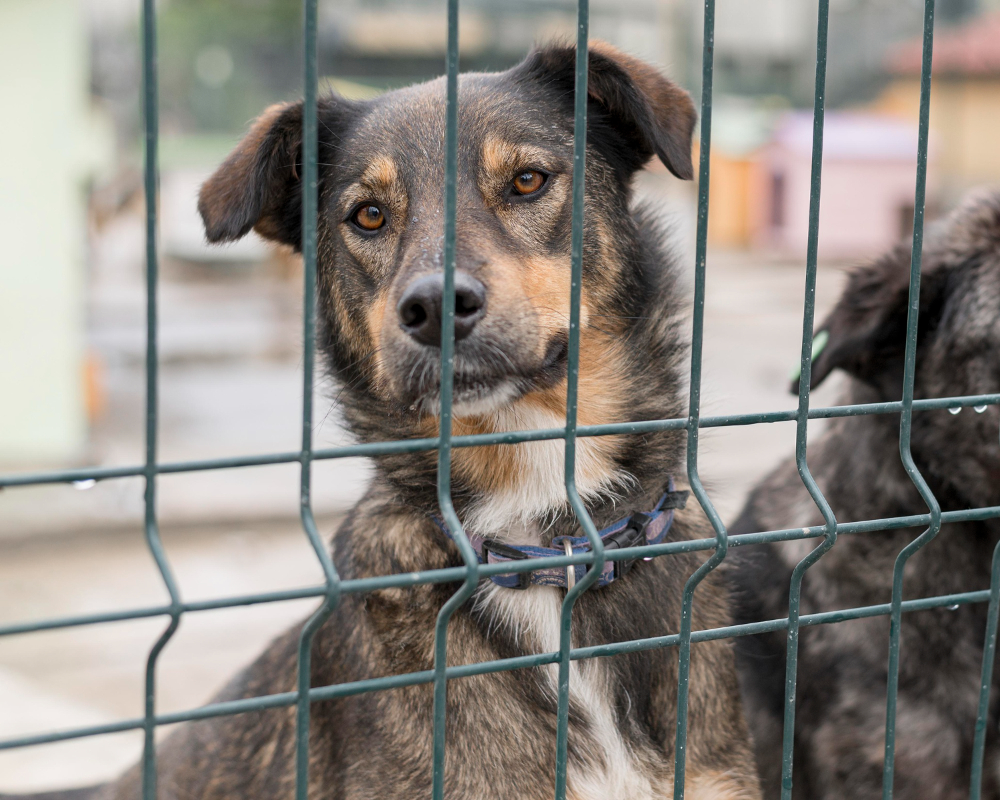

¿Quiénes somos?
Somos una pareja apasionada por el bienestar y la felicidad de nuestras mascotas. Desde el primer día que adoptamos a nuestros amigos peludos, nos dimos cuenta de la alegría y el amor incondicional que traen a nuestras vidas. En Pets Ludos, nos dedicamos a seleccionar cuidadosamente cada artículo que ofrecemos, asegurándonos de que cumpla con los más altos estándares de calidad y seguridad. Nuestro objetivo es brindar una experiencia de compra excepcional, donde cada cliente encuentre lo que necesita para cuidar y consentir a su mascota. A medida que crecemos, soñamos con abrir nuestra propia tienda física, donde podamos ofrecer aún más opciones y atención personalizada.
¿A qué nos dedicamos?
En Pets Ludos, nos dedicamos a ofrecer una amplia variedad de productos para el cuidado y bienestar de tus mascotas. Nuestra pasión por los animales nos impulsa a seleccionar cuidadosamente cada artículo que vendemos, asegurando que solo ofrezcamos lo mejor para tus compañeros peludos. Desde alimentos de alta calidad hasta juguetes divertidos y accesorios esenciales, nuestra tienda virtual es un lugar donde puedes encontrar todo lo que necesitas para consentir a tu mascota. Nos esforzamos por mantenernos actualizados con las últimas tendencias y novedades en el mundo de las mascotas, para que siempre tengas acceso a lo mejor.

¿A qué aspiramos?
En Pets Ludos, nuestras aspiraciones son grandes y están llenas de amor por los animales. Nuestro objetivo es abrir nuestra propia tienda física, donde podamos ofrecer no solo productos de calidad, sino también servicios integrales para el bienestar de tus mascotas. Imaginamos un espacio donde, además de vender alimentos y accesorios, podamos contar con servicios como veterinaria y baños para perros, convirtiéndonos en un pet shop completo que satisfaga todas las necesidades de nuestros clientes y sus compañeros peludos. A largo plazo, soñamos con colaborar con refugios de animales, ayudando a concientizar sobre la adopción y el cuidado responsable. Creemos que cada mascota merece un hogar amoroso, y queremos ser parte de ese cambio positivo en la comunidad.
